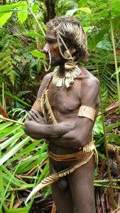
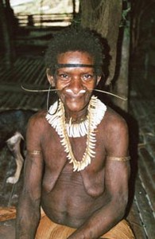
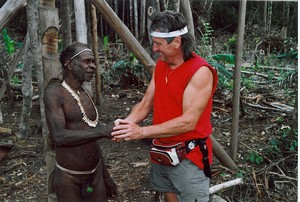

Navigation
 ČESKÁ verze
ČESKÁ verze- The best of New Guinea
- PNG & West Papua
- Today cannibals
- First Contact expedition
- Tribe Expedition
- ITINERARIES AND SCHEDULE
- Carstensz Pyramid - Top of Papua
- Korowai Batu & Kopkaga - tree people
- Asmat tribe – the Papuan cannibals
- Yali tribe
- Mamberamo river of West Papua
- Dani tribe in Baliem Valley
- Lani tribe in Baliem Valley
- Wamena as a first contact place on West Papua highlands
- Papua New Guinea
- Goroka Show & Mt. Hagen Show
- Asaro Mudman
- Huli tribe – the wig-men
- Why to go with us
- The films from our expeditions
- More photos
- References
- Papua Postcards
- Papua Internet
- Links
- Contact us
- Download
Korowai & Kombai – Papua Tree people
The tree people, Korowai and Kombai, live in the basin of the Brazza River in the vast lowland jungles. This is situated in the foothills of the Jayawijaya mountain range, which is in the southwest part of the New Guinea Island in the Indonesian province Papua (Irian Jaya). Mosquitoes and age-old rivalry forced these tribes to build houses in the tops of trees. Some of them are placed as high as 40 m.

Kombai – tree people Photo©Josef Bojanovsky (Czech)

Kombai – tree people Photo©Ivo Franz Pindur (Germany)
.JPG)
Kombai – tree people Photo©JahodaPetr.com (Czech Papua Guide)

Korowai – tree people Photo©Mrs.Bibiana Stefania Fair (Canada)
.JPG)
Kombai – We help them with sago processing Photo©JahodaPetr.com (Czech Papua Guide)
Korowai & Kombai – friendly cannibals?
.JPG)
Kombai – tree people & J.Giecek Photo©JahodaPetr.com (Papua Guide)
.JPG)
Korowai – tree house Photo©Pavel Vacha
Korowai and Kombai used to be cannibalistic tribes. We are convinced that they still practice ritually cannibalism, but considerably less frequently. Korowai and Kombi are two of the wildest tribes on Papua. Despite that, as we gradually found out during our expeditions to this area, one can get along with them reasonably well. We have been visiting the area of these tribes for more than 10 years now. We even have some of “our friends” among the tribesmen.
On the left-side photo: Jaromir Giecek, professional photograpfer and cameraman of Czech TV playing music for Kombai childern and women. Jaromir Giecek shot a six part series about Papua tribe life. (Kombai – tree people tribe)
On the right-site photo: Tree house of Korowai tribe, in Indonesian language called „rumah thingi“.
Korowai & Kombai – men dressed in bones– West Papua
.JPG)
Korowai – tree house Photo©JahodaPetr.com
Korowai are one of the few Papuan tribes who do not wear kotekas. The men of this tribe have their penises “pushed” into the scrotum, and on the skin which sticks out, they have tightly tied a green leaf. Korowai Batu use nutshells instead of leaves, and the women wear short skirts made of sago palm phloem, which is also their main food.
.JPG)
Kombai climbing up to a tree house*Photo©Luděk Uzel (Czech)*
Kombais are the most beautiful tribe people of the west Papua of which we know. The men wear a beak from big bird instead of a koteka on their penises. Their menacing look is intensified by long necklaces made of dog teeth, and they rarely lay their bows and arrows aside. The heads of the arrows are often made of bones. “We use these bone-headed arrows only for people” Kombais would say to us. The women walk half naked, only in short skirts made of sago. There, it seems time stopped only a short while after the dinosaurs died out. I don’t know of a more beautiful tribe …
Korowai & Kombai – Main tribal chief – West Papua
.JPG)
Kombai – tree people Photo©JahodaPetr.com
New Guinea, more specifically west Papua, has many surprises in store. The Kombai tribe is, gently put, a problematic tribe. Despite that, we have experienced from them the greatest expressions of friendship whatsoever. Several times, we met the main tribal chief of all Kombais. This rarely happens during expeditions.
First, he “greeted us” by pointing his bow at us, it took about an hour-long negotiation till we were allowed to enter the village. Today we even have his assurance of safety on the whole Kombai territory. That’s something unexpected from the chief of such a troublemaking tribe.
The Kombai tribal chief is a muscular man with a harsh face. Two strips of dog teeth with about 200 total teeth run across his chest. His nose is decorated by horns of a big beetle, and by boar tusks, which are grinded into a thin plate. The top of his head is ornamented with an intricate decoration made of bamboo fibers finely coiled around his hair. His penis is covered by a koteka made of a beak of five or seven years old zoboroh, which is fixed in place by a strip knitted from ropes that were in turn woven from orchid fibers. The thong around his waist has been decorated with small teeth – dog grinding teeth.
.JPG)
Kombai collecting sago (food) – just after cutting sago palm with a stone axe Photo©Luděk Uzel (Czech)
Our first meeting was conducted with an air of distrust and thus warlike mood. After three or four visits we eventually became friends. Last year the tribal chief gave us his personal assurance of safety on the territory of the Kombai tribe, this is hard to believe considering they are one of the Papua’s wildest tribes. That time we were in his village for the seventh time. Obtaining Kombai friendship is not an easy task.
Korowai & Kombai – West Papua lowland Trekking
.JPG)
Trekking through the forest is difficult and „wet“ – Miss Eva filming her friend with tree people – Kombai teritory – Papua Photo©JahodaPetr.com
Trekking on the territory of Kombai and Korowai tree people is a very different kind of trekking than you might be used to, to say the least. This area of lowland rain forest is in a close proximity of mountains, and not far from the sea. This drives the amount of yearly precipitation to the max. In 2003 and 2005, we experienced there several “dry” expeditions, but during other years it rained more than enough.
.JPG)
Kombai – Family photo before departure Photo©JahodaPetr.com (Czech Papua Guide)
For example, in 2005 it was extremely wet. In that year we undertook three expeditions which passed over the Kombai territory and it was raining during all three. Most importantly the level of water in the rivers increased. We ended up wading through long parts of the flooded jungle, sometimes more than even knee-deep in the water. Many of the bridges were underwater, and time from time someone fell in. At that moment our waterproof GEMMA backpacks proved very helpful. These backpacks are designed as racks for waterman sacks.
.JPG)
Kombai-Last view of the Kombai teritory*Photo©JahodaPetr.com (photo from the „airport“)*
After this “wet” part, comes trekking in a “dry” forest. We take narrow footpaths which are often disrupted by sago peat bogs. On this type of terrain it is not uncommon that we sink into the mud ankle-deep or sometimes even up to our calves. Clearings offer another challenge – we have to balance on the logs of cut-down trees.
Generally it can be said that trekking in the Korowai and Kombai territory is some of the more difficult kind, but it can be coped with by anyone, who is used to physical activity. We chose such a pace that everyone can keep up, and as a rule we don’t walk for more than 4–6 hours. Therefore, it is possible to reach the target destination safely, and cautiously, even while covering such strenuous terrain. This trekking should not be underestimated, but you needn’t be too afraid of it. After all, we experienced the two “dry” years…
Korowai & Kombai + Asmat – West Papua
Our expedition to the Korowai and Kombai tribes of the west Papua can be extended to the well known Asmat tribe. In this case, we either start at Asmats or end there. Just after Danis, the Asmat tribe is the most well-known tribe on Papua. It was rendered famous by their woodcarving skills and the tragic disappearance of Rokefeller jr., who was a son of the New York state’s governor. You can learn more about the Asmat tribe on our dedicated page about the Asmat tribe.
Korowai & Kombai – itineraries and Schedule
Korowai & Kombai expedition itineraries and schedules
The film from Korowai & Kombai expedition